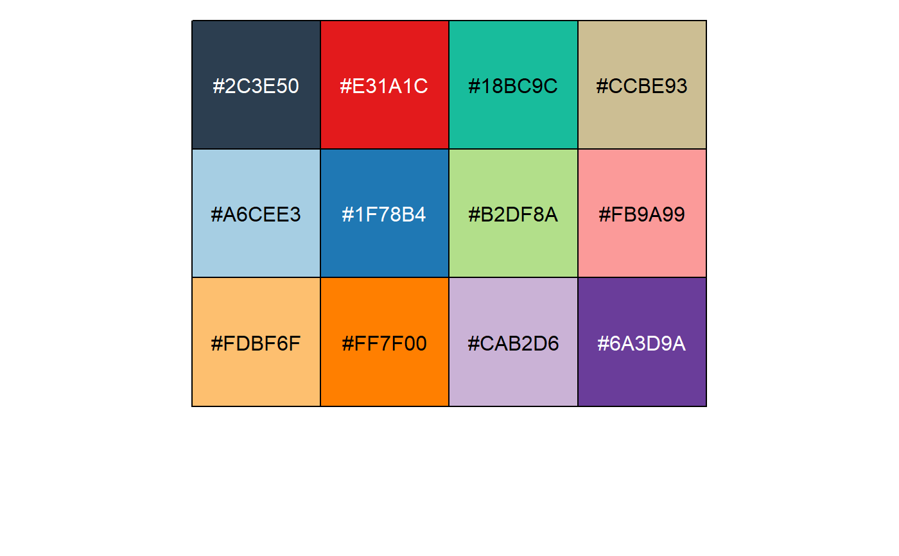

R/ggplot-scale_manual.R
palette_tq.Rd
These palettes are mainly called internally by tidyquant scale_*_tq() functions.
scale_*_tq()
palette_light() palette_dark() palette_green()
library(scales)#> #> Attaching package: ‘scales’#> The following object is masked from ‘package:purrr’: #> #> discard#> The following object is masked from ‘package:readr’: #> #> col_factorscales::show_col(palette_light())